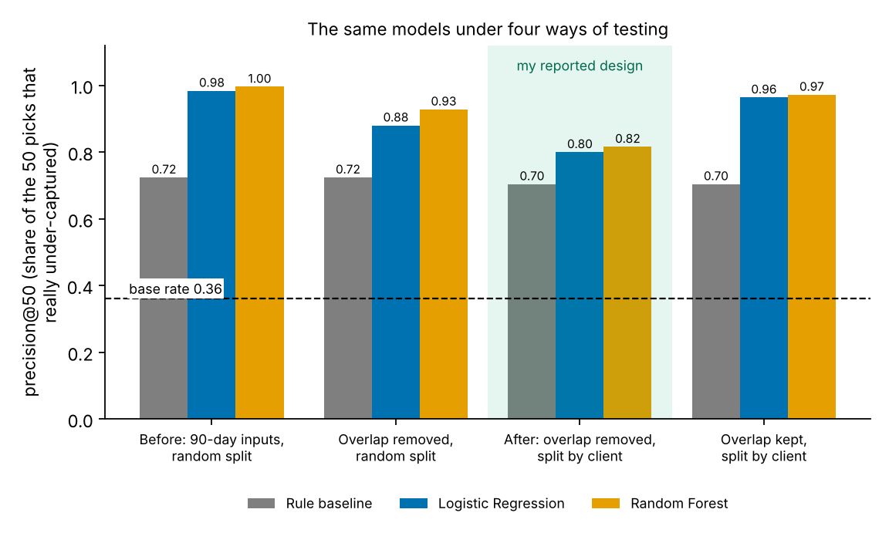
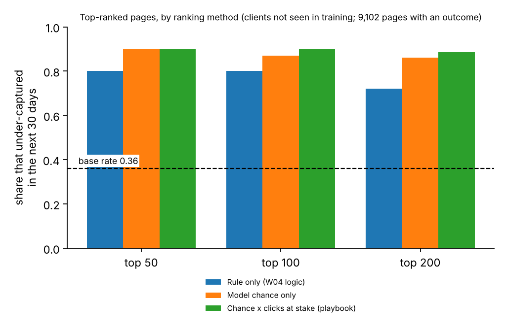
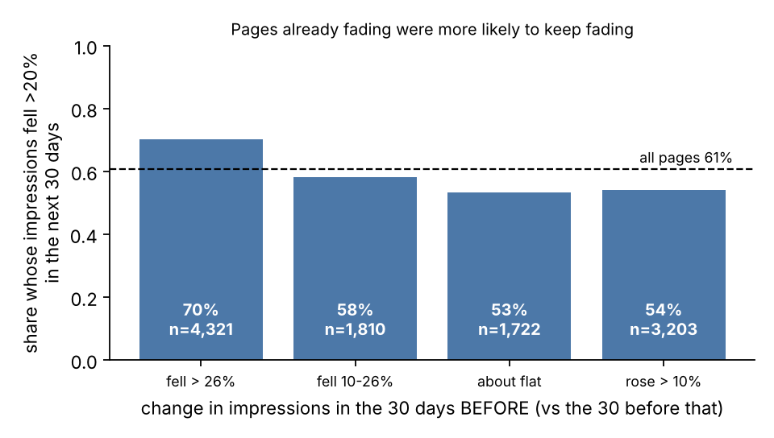
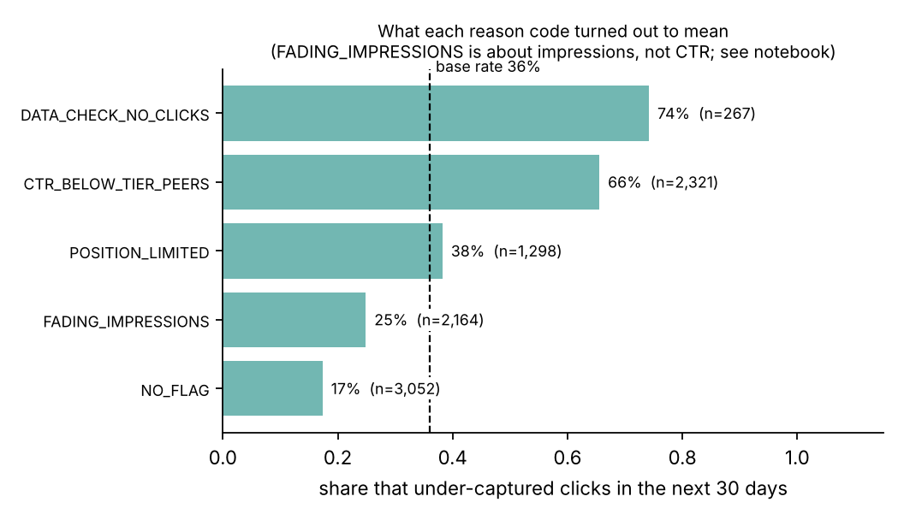

Abstract
FlyRank publishes content for clients and then watches search data to decide which pages a person should fix first, so I asked a narrow version of that question: of the pages that already rank in search, which ones will get noticeably fewer clicks than other pages at the same position over the next 30 days? I used FlyRank’s anonymized starter dataset (30,000 pages from 32 clients, one trailing 90-day window), treating the most recent 30 days as the outcome and the older days as the inputs. I compared a hand-written rule with Logistic Regression and Random Forest models, always holding out whole clients, so every page was scored by a model that had never seen its client. On held-out clients the Logistic Regression’s top 50 picks were right about 80% of the time against about 70% for the rule, when roughly a third of pages qualify, and the same test run with a random split and inputs that overlap the outcome would have shown 98 to 100%. The output is a ranked review queue with reason codes and a human-review checklist; it is observed, directional evidence from one snapshot, meant to decide which pages a person reads first, and it does not show that any rewrite recovers clicks.
Terms in one minute
- Impressions, clicks, CTR
- An impression is a page showing up in a search result. CTR (click-through rate) is clicks divided by impressions. In this data CTRs are small: well under 1%.
- Position tier
- Where a page ranks on average:
top_3(position 3 or better),page_1(up to 10),striking(10–20),page_3_5(20–50),deep(below 50). - Base rate
- The share of pages that qualify, so you can see what guessing would score. Here, about 36%.
- Precision@K
- Of the K pages the method ranks highest, the share that really did under-capture clicks.
- Held-out clients
- Test pages come from clients that were not used to train the model, so the score says how it might do on a new client.
1. Introduction and problem
The FlyRank problem behind this paper
FlyRank researches, writes and publishes content straight into its clients’ websites, then watches search data and adjusts. Content that gets found tends to rank and then quietly decay: rankings slip, clicks drop, and teams often notice late. Out of thousands of pages, which one should a person fix first?
FlyRank’s product already answers that with hand-written flags: if-this-then-that rules with thresholds chosen by hand. They run in production and they work. This paper takes one slice of the same problem, the click side, and asks whether a method that is tested honestly, on clients it has never seen, can rank pages better than a plain hand-written rule of my own.
Two things to be clear about. The product’s own flags and scores are deliberately not in the data I was given, so I could not use them as inputs and I cannot compare against them. And the baseline in this paper is a simple rule I wrote myself, not FlyRank’s production flags. So this is a case study of the problem, not a test of FlyRank’s system.
One editor, one week
Picture a content editor at a small team. Thousands of pages already show up in search results, and she has time to rework 30 titles and descriptions this week. Which 30?
Clicks depend heavily on where a page ranks. In this data, pages in the top three positions earned a click on about 0.49% of their impressions, and pages ranked below position 50 earned about 0.04%. So a low click rate on its own says little. A deep page at 0.06% may be normal, while a page-one page at 0.20% may not be. The fair comparison is a page against other pages at the same position tier.
That gives the question this paper tests:
- Question. Of the pages that already rank, which will get at most half the clicks their tier peers get, for the same impressions, over the next 30 days?
- Unit and output. One page in, a ranked score and one reason code out.
- Action. A person reads the page and its search listing, and decides whether to change anything.
- Cost of a wrong call. A false alarm costs a reviewer’s time. A miss leaves a real click gap unread. Because a person reads every page before acting, I treat a false alarm as the cheaper mistake.
I am not trying to explain how a search engine ranks pages, and nothing here shows that changing a page will bring clicks back. The queue is decision support: a list of pages that look worth reading first, and why.
2. Data
Source
The data comes from the FlyRank ML Internship dataset, which has two parts. Everything in my models and results uses the first.
- The starter slice (used for all results here). One row per page: 30,000 rows and 44 columns from 32 pseudonymized clients. Every metric covers a trailing 90-day window ending at export time. The file does not give calendar dates for that window.
- The warehouse release (not used for any result here). A larger release on Hugging Face (build
flyrank_pseudonymized_warehouse_release_v20260703) with about 79 million rows of daily search data. I used it once, for a data-contract check in Week 3: one month (2026-03) of the daily table has 9,841,378 rows, and 3,611,061 of them (36.7%) have Search Console data. That check shaped my caution about missing data, but none of the numbers in this paper come from the warehouse.
Time windows
The most recent 30 days are the outcome. Everything older, days 31 to 90 back, is the feature window, which I get by subtracting the last-30-day numbers from the 90-day totals. Inside it, “days 31–60” and “days 61–90” are kept separate so I can measure change over time without touching the outcome.
Who is in each group
| Group | Pages | Clients | Rule for being in |
|---|---|---|---|
| Starter file | 30,000 | 32 | Everything |
| Week-4 screen | 22,006 | – | At least 100 impressions in 90 days |
| Review queue | 15,441 | 28 | At least 500 impressions before the outcome window, and a real position |
| Validated pages | 9,102 | 28 | Queue pages that also have at least 500 impressions in the outcome window |
What I left out, and why
- 1,205 pages with no position data. In this file a position of 0 means “no data,” not “position zero.”
- Pages with under 500 impressions. Too few clicks to tell a real gap from chance.
- Fields I never used as inputs: the trend fields (built from the same windows as the outcome), every last-30-day column, the 90-day totals and CTR (they contain the outcome), days since last update (an update during the outcome window could change the result), and the pseudonymous IDs (used only to group clients for splitting).
- The product’s own decision flags. They are not in the file, and I would not have used them as inputs or labels.
One consequence I want to be upfront about: requiring 500 impressions in the outcome window drops 41% of the pages that were visible beforehand (6,339 of 15,441). Those pages had lower earlier CTR (median 0.109% vs 0.201%) and fewer earlier impressions (median 1,053 vs 5,408). So accuracy numbers describe pages that stayed visible.
Public safety
The starter data has no client names, domains, URLs, page titles, or search queries. This page shows only aggregates and charts: no client identifiers, URLs, or queries.
A cross-check
FlyRank’s own March 2026 research paper reports weighted CTR by position tier of 0.42%, 0.34%, 0.33%, 0.16% and 0.05% (top 3 to deep). On pages with at least 100 impressions I get 0.49%, 0.35%, 0.35%, 0.15% and 0.04%. The order is the same and four of the five tiers are close. The top-3 tier differs most, and it is the smallest one in this slice. The levels are low because they describe whole content portfolios, so I would not compare them with industry CTR benchmarks.
3. Methodology
Assumptions
- CTR depends mainly on position, so pages should be compared inside a position tier.
- The most recent 30 days are a fair stand-in for “the next 30 days.”
- A page with at least 500 impressions has enough clicks to judge.
- That a page’s earlier click habits carry forward is something I test, not something I assume.
The label
A page is labelled 1 if, in the last 30 days, it got at most half the clicks its tier peers got for the same impressions. The yardstick for each tier is the pooled outcome-window CTR across all validated pages. It is a fixed benchmark, the same for every client, and it is not an input to any model. It is an observed outcome, not a bucket or a product flag. About 36% of validated pages (36.1%) are labelled 1.
My first framing in Week 2 was a CTR ratio measured in the same window as the inputs. I replaced it, because a label has to be something that happens after the inputs are measured.
Baseline
The baseline is a hand-written rule from Week 4: for each page, missed clicks = (the tier’s pooled CTR × the page’s impressions) − its actual clicks, floored at zero, computed on the feature window. Pages are ranked by missed clicks. No learning is involved. This is my own rule; FlyRank’s production flags are not in the data.
Models and inputs
I tried three models: a depth-3 decision tree, a Logistic Regression (standardized inputs), and a Random Forest (300 trees). I started with readable models and added the forest to see whether it earns its extra complexity. The random seed is 42 throughout.
There are 25 inputs, in three groups:
- 5 from the feature window: impressions, clicks and CTR from days 31–90, plus impressions and CTR from days 31–60.
- 14 static page facts: content type, search intent, search volume, competition, cost per click, word count (with a flag when it is missing), and page age.
- 6 position columns (average position and the tier) that cover all 90 days and therefore overlap the outcome window. The lane needs position, so I kept them and tested what happens without them.
Validation design
I split by client with 5-fold grouped cross-validation, and the code asserts that no client appears on both sides of any fold. I report precision at K = 50, 100 and 200 averaged over folds, plus AUC, with the base rate next to every number. I also repeated the test on 20 different random sets of held-out clients. The data is a single snapshot, so a time-aware split was not possible.
Leakage checks
- Column audit. No trend field, last-30-day column, 90-day total, CTR, or ID is among the inputs.
- A planted leak. When I deliberately added the outcome window’s own CTR as an input, precision@50 went to 1.000 for both models. So my test setup does catch a leak.
- Before and after. I re-ran the models with the shortcuts, to measure how much they would have inflated the score (Figure 1).
- Drop tests. I removed the position columns, the CTR inputs and the static facts one group at a time; the result moved little (Section 4).
- Who gets scored. I checked the population rule described in Section 2.
4. Results
Model versus baseline, on the same split
| Method | Precision@50 | @100 | @200 | AUC |
|---|---|---|---|---|
| Rule baseline | 0.704 | 0.636 | 0.588 | 0.738 |
| Decision tree (depth 3) | 0.644 | 0.680 | 0.666 | 0.790 |
| Logistic Regression | 0.800 | 0.764 | 0.742 | 0.823 |
| Random Forest | 0.816 | 0.818 | 0.752 | 0.834 |
- Logistic Regression and Random Forest each beat the rule in 4 of 5 folds. In one fold, made of a single client, the rule won (0.72 vs 0.66 for Logistic Regression).
- Over 20 different sets of held-out clients, Logistic Regression beat the rule in 18 and Random Forest in 19. The average gain at precision@50 was +0.11 for Logistic Regression (spread about 0.10) and +0.17 for Random Forest.
- Without the biggest client (35% of the pages), the rule scores 0.66, Logistic Regression 0.75 and Random Forest 0.81.
- Random Forest edges out Logistic Regression (0.816 vs 0.800), a difference smaller than the swing between folds. The readable model gets nearly all of the gain.
- With 50 picks per fold, differences of 0.05 are noise. I read the ordering of the three methods as directional and only the gap between the rule and the two stronger models as a pattern.

What the model leans on
Shuffling one input at a time on held-out clients, the biggest drops in AUC come from a page’s own CTR in the feature window (0.070) and its CTR in days 31–60 (0.056), then its clicks in the feature window (0.017). Position, search volume and content type barely register. In the Logistic Regression, lower earlier CTR pushes a page toward being labelled 1. I read this as association only.
An earlier version of my write-up said the model mostly learns that low CTR stays low. Dropping both CTR inputs changes the result very little (Random Forest 0.816 to 0.796), because earlier clicks and impressions let the model rebuild CTR. The accurate statement is that the model leans on how many clicks a page earned relative to its visibility earlier.
Where it is wrong
- False alarms are close calls with tiny click counts. One of the model’s most confident false alarms was a deep-tier page expected to get about 0.5 clicks that got 1. Others had zero clicks earlier and then recovered to roughly the tier’s level.
- Misses are sudden drops. The pages the model scored lowest that did under-capture had decent earlier CTR (0.55–1.1%) and then fell to 0.08–0.20%. A model that reads only the earlier window cannot see that coming.
- Concentration. The Random Forest’s top 200 were 87.5% correct against the 36% base rate, but they came from 13 clients and 44% from one of them.
Ranking by value, not only accuracy
For the review queue I rank pages by the model’s chance of under-capturing multiplied by the clicks at stake (the rule’s missed clicks, scaled to 30 days). Pooling every held-out client and taking the top K of all 9,102 pages is a stricter cut than the per-fold numbers above, so the two sets of figures are not comparable with each other.

What else the data showed
Momentum, yes. Page age, no. I looked at 11,119 pages from 28 clients that had at least 500 impressions in days 31–60, and asked how many lost more than 20% of their impressions in the last 30 days (60.8% did overall).

| Days since last update | Pages | Clients | Share that fell |
|---|---|---|---|
| 0–30 | 6,513 | 26 | 60.6% |
| 31–90 | 35 | 5 | too few |
| 91–180 | 4,560 | 15 | 61.1% |
| 181+ | 11 | 1 | too few |
I expected stale pages to decay faster, and the data does not show that. Pages updated in the last 30 days and pages updated 91–180 days ago fell at the same rate. The other two groups are too small to say anything. So I cannot support a rule that flags pages by age, and I also cannot say that refreshing does not work, because the data has almost no long-untouched pages to compare against.
Comparison articles: I cannot separate the content type from the client. In an earlier check, comparison articles looked like they underperformed other articles at the same position. Then I found that all 697 comparison articles in the file come from a single client, and that client’s keyword articles also get below-average CTR. Comparing with every client’s keyword articles therefore mixes content type with client. The fair test is inside that one client:
| Position tier | Comparison (pages) | Same client, keyword (pages) | Gap, 95% range (points) |
|---|---|---|---|
| page_1 | 0.077 (226) | 0.171 (50) | 0.034 to 0.161: a gap |
| striking | 0.160 (76) | 0.160 (32) | −0.084 to 0.091: no gap |
| page_3_5 | 0.094 (63) | too few (7) | not testable |
So the evidence is mixed: lower click-through for comparison articles on page 1 at that client, no difference in striking distance, and nothing to test beyond that. I report it as unproven and make no recommendation by content type.
5. Limitations and honest framing
These are the things this work cannot claim.
- No cause and effect. The data is one snapshot with no experiment. Nothing here shows that rewriting a title or refreshing a page recovers clicks.
- Not about how a search engine ranks pages. I modelled click outcomes in one portfolio of content, nothing more.
- One snapshot, 28 clients. The biggest client holds about 35% of validated pages, and results on a client the data did not cover could differ.
- Accuracy is measured on 59% of the queue. The 9,102 validated pages kept at least 500 impressions in the outcome window. For the other 41% I have no accuracy number.
- The label is a click gap, not business value. It does not measure revenue, leads or anything a client would call success.
- Position columns overlap the outcome window. Dropping them changed the result very little (Random Forest 0.816 to 0.812, Logistic Regression 0.800 to 0.784), but I cannot remove the overlap from this file.
- My baseline is my own rule, not FlyRank’s production flags. Those flags are not in the data, so I cannot say how this queue compares with them.
- The yardsticks are computed on the same data they are used on. They are a baseline, not an independent standard.
- Thin groups. Only 8 comparison articles and 38 feedly articles are among the validated pages. The deep tier is a weak label, because “under half of the expected clicks” there effectively means zero clicks.
- Two folds are a single client each, and small K is noisy. I report every fold and treat small gaps as directional.
- Zero clicks are ambiguous. A page with many impressions and no clicks could have broken tracking or could just be unclicked. This data cannot tell which.
- Momentum is an association. Pages may fade for reasons the data cannot see, such as seasonality.
6. Ranked recommendations
This is the action playbook that comes out of the work. Read it as decision support: the queue says which pages look worth reading first, and a person decides what to do.
What to do first, in order
| # | Action | Reason code | Pages | What happened next (pages with an outcome) | Who decides |
|---|---|---|---|---|---|
| 1 | CHECK_TRACKING_FIRST | DATA_CHECK_NO_CLICKS | 452 | 74.2% under-captured (n=267); zero clicks on 2,000+ impressions | Analyst, before anything else |
| 2 | REWRITE_TITLE_META | CTR_BELOW_TIER_PEERS | 4,804 | 65.5% under-captured (n=2,321), against a 36.1% base rate | Content editor |
| 3 | REVIEW_FOR_REFRESH | FADING_IMPRESSIONS | 4,492 | Judged on impressions: 67.0% fell, against 47.0% for unflagged pages | Editor and analyst |
| 4 | REVIEW_CONTENT_DEPTH | POSITION_LIMITED | 1,981 | 38.2% under-captured, about the base rate: the issue is rank, not the snippet | Content editor |
| 5 | MONITOR_ONLY | NO_FLAG | 3,712 | 17.3% under-captured; 47.0% lost impressions | Nobody; re-score next period |

I first tried a fifth code for pages the model flagged without any simple rule firing. It matched 1 page out of 15,441, so I dropped it. Pages are not clustered into archetypes; the codes are rules, and I do not map actions by content type because there are only 52 comparison and 118 feedly pages in the queue.
Human-review rules
- A person reads the page and its search listing before anything changes. Every row, no exceptions.
CHECK_TRACKING_FIRSTrows go to the analyst first. If the zero clicks are a data problem, nothing else on that row means anything.- Review at most 25 pages per client per batch. Without that cap, one client took 54% of the top 100; with it, the biggest client holds 25%.
- Read the flags. A low expected click count (under 5 in 30 days) means one or two clicks flip the story. A thin history (page under 90 days old) means the earlier record is weak evidence. A deep-tier label effectively means zero clicks.
- Look for a normal reason for the gap: the answer shows in the search result itself, ads or other features sit above the listing, or the query is branded.
- Write down what the person decided and why, so the monthly re-score can learn from it.
What should not be automated
- Rewriting or publishing titles and descriptions without a person reading the page.
- Deleting, merging, redirecting or unpublishing pages because of a score.
- Flagging a page for refresh because of its age alone. The data shows no age effect.
- Telling a client or manager to expect a specific click gain.
- Acting on
CHECK_TRACKING_FIRSTpages before the data has been checked. - Using the queue on a new client without re-running the validation checks.
- Using it for comparison or feedly articles, where there is too little data to say anything.
- Making claims about what a search engine rewards, or putting client identifiers, URLs or queries in anything public.
Cost and value
Measured: the top 50 pages by the combined score had on average 119.8 realized missed clicks per page in the next 30 days, against 5.2 for an average validated page. I do not credit the model for most of that gap, because the rule alone gets 123.0 and both rankings favour big pages.
Assumed, not measured: if a review and rewrite takes an hour a page, and a rewrite closed 10% or 25% of the gap, the arithmetic gives about 12 or 30 extra clicks per hour of work. Those recovery shares are my picks, not findings, and 0% is a live possibility. The sensible first step is a small test: try 20–30 pages from a per-client-capped list and leave a similar set of flagged pages untouched for comparison. Until that has run, I claim nothing about whether the actions work.
Light monitoring and retrain triggers
- Accuracy. Over 20 sets of held-out clients, precision@50 averaged 0.79 with a 5th percentile near 0.70. A month below 0.70 is worse than almost every holdout I saw, and means retrain and re-audit. It can only be measured after the 30 days have passed.
- Fall back to the rule if the model is no better than the plain rule for two months in a row.
- A retrain is accepted only after the validation checks are re-run (grouped split, leakage audit, failure examples). Nothing retrains and ships automatically.
- Input checks. The share of the top 100 from one client, median earlier CTR, the number of zero-click pages with many impressions (452 today), the share of pages flagged as fading (29.1%), and how many pages are visible enough to score (15,441).
- Calendar. Re-score monthly and re-check the tier yardsticks every quarter. These thresholds are judgment calls, and I would revisit them after a few months.
7. Reproducibility
Everything is in the public repository: github.com/ARS-0/FlyRank-ML-Internship. The starter CSV ships with it, and the notebooks from Week 4 on clone the repo and read data/raw/content_refresh_anonymized.csv, so you can open any of them in Colab and choose Run all. The exception is the Week-3 data-contract notebook: it queried the gated warehouse, rerunning it needs access to that release, and the saved version does not include its connection setup. Its printed outputs are the record of those checks.
- Week 4, the baseline rule and its first queue (its comparison-article verdict is corrected in Week 6 and in this paper)
- Week 5, models versus baseline
- Week 6, the validation and leakage audit, including the before and after
- Week 7, the action playbook and the exported queue
- Capstone notebook, which re-derives this paper’s key counts from the raw CSV and checks them against the receipts
Random seed 42 throughout. The committed notebooks were run on scikit-learn 1.6.1 in Colab, and the same headline numbers also came out on versions 1.8.0 and 1.9.1. Rerunning on another version can move a figure by a point or two. Runtime is a few minutes per notebook.
Receipts. The numbers in this paper trace to four small metrics files, copied here as they stood at publication: week 4, week 5, week 6, week 7. The ranked queue itself is a data file, so it is not committed. The Week-7 notebook regenerates it on every run.
8. Acknowledgments and data credit
Built on the FlyRank ML Internship dataset. Data from FlyRank (flyrank.ai), pseudonymized and shared for the internship. Thank you to the FlyRank team for the data and the structure of the program.
I also read FlyRank’s March 2026 research paper closely and used it as the example I learned to audit; the CTR-by-position cross-check above comes from it.
AI assistance: I used an AI assistant (Claude, from Anthropic) to draft and critique code and text. I checked the results by running the notebooks, and the numbers here come from those runs.